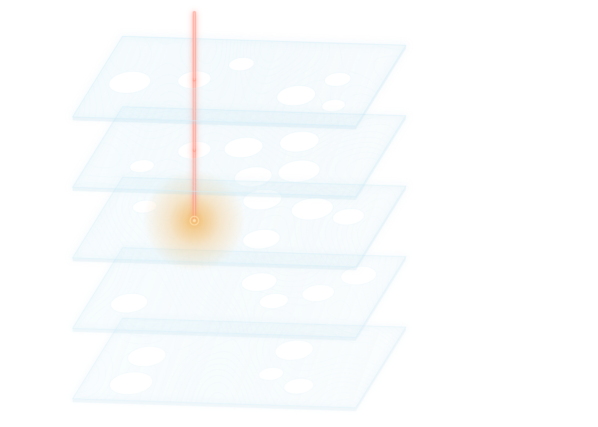

The problem
A UK government agency’s document search kept failing its customers. The existing SQL search was built on an entity-attribute-value design, and perfectly innocent-looking queries could produce enormous query plans, which then failed.
Another query tweak wasn’t going to fix that. A replacement needed to ingest from different sources consistently, keep the meaning of a search separate from the mechanics of the engine, and handle failure properly. What happens when indexing falls behind? When updates arrive out of order? Where do failed messages go?
That’s a platform, not a search box on top of a search engine, and a conventional team proposal for that breadth was never going to be funded. An AI coding agent made it worth attempting with one engineer, but it didn’t remove a single engineering responsibility. Somebody still had to know what good looked like.
Run it like a team
I ran GitHub Copilot the way I would have run a team. I delegated the implementation, not the responsibility.
- AnalyseI set scope and boundaries → brief
- SpecifyWe agree contracts and acceptance → specification
- PlanWe sequence changes and tests → execution plan
- Build & checkCopilot implements; I accept the work → review evidence
Acceptance criteria did most of the work. “Build a robust ingestion pipeline” is useless. “If one update fails and is retried, can a later update for the same document overtake it?” is useful: it constrains the implementation and gives the review something to challenge. That kind of question doesn’t come from a longer prompt. It comes from experience.
My day split roughly in half: half specifying and reviewing, half driving Copilot through the work. It’s a lead engineer’s week, compressed into a day.
Long-term memory
By about day three, the spec and plan weren’t enough. However carefully I adjusted them, the code for individual tasks started drifting apart. Each session knew what it was meant to do next, but had no stable picture of what was already true. The first version of the ingestion pipeline was the casualty, and I threw it away and rebuilt it.
I’d seen the same thing in human teams without shared, written-down architecture, and the fix was the same. A project wiki became the agent’s long-term memory: architecture, contracts, field meanings and decisions, drawn into every prompt. Custom instructions carried the working rules; the spec and plan carried the current task’s scope.

The side effect is documentation that’s actually current, because the build depended on it: 39 pages, written for the agent and readable by people.
Checking the work
Copilot sometimes produced code that looked right, passed its tests, and was wrong. The dangerous version is when the code and the tests share the same wrong assumption: everything’s green, and nothing’s been proved.
Working solo, I caught those by reading the tests rather than just the results, by running the system and watching what it actually did, and with fresh-session reviews against the spec. That doesn’t scale to a team, so these are the checks I’d reach for there:
- Tests written from the spec, before the code, with each acceptance criterion naming the test that proves it.
- Separate author and checker. The implementing agent can’t edit the tests.
- Mutation testing: if you inject a bug and the tests stay green, they aren’t testing anything.
- Property-based tests for invariants such as ordering during retries.
- Architecture rules enforced by the build, not by someone spotting a violation in review.

What got built
A working beta of a search platform, not just an endpoint, following an onion architecture: contracts and behaviour inward, infrastructure at the edge.
Ingestion runs on a channel-based graph with bounded channels for backpressure. Messages are partitioned into ordered lanes by document key, so unrelated work runs concurrently while updates to one document stay in order, and a retry deliberately blocks its lane so a later update can’t overtake it. That’s a correctness decision, not a performance setting. Terminal failures go to dead-letter paths, and per-node metrics make runtime problems visible.
Query meaning lives in a query plan the repository owns: typed signals, rules for concepts, filters and sorting. Infrastructure translates the plan into search-engine requests, so search policy isn’t buried in a UI component, and you can test what a query means before testing what it sends.
Around it: .NET Aspire orchestration, emulators, data images, rule-authoring tools and a modular Blazor workbench, with tests that mirror the project boundaries.
Honest limits
The platform reached a working, documented beta rather than a public release, so it isn’t something you can use online today.
It also wasn’t equally good everywhere. Most of my attention went into the service; the UI was a sideline, and it shows. Copilot didn’t make up for the attention I didn’t give it.
It was also the easy version. Working alone meant no coordination cost, full continuity, and one person’s judgement applied everywhere. For comparison, a service I led previously was delivered by a ten-person team over nine months. The scope, reuse and context were different, so I wouldn’t divide one by the other, but it shows how much one experienced engineer could take on.
Copilot amplified what I brought. Where I brought thirty years of architecture, it amplified that. Where I brought less attention, it amplified that too.
If I started today
This was built at the start of 2026, and the tooling has moved on quickly. Today I’d add code knowledge graphs, which map where things are in a codebase as well as why, and spec-driven tooling that formalises the analyse–specify–plan–build loop. The principle wouldn’t change: an agent needs a durable, authoritative source of truth, and so does a team.